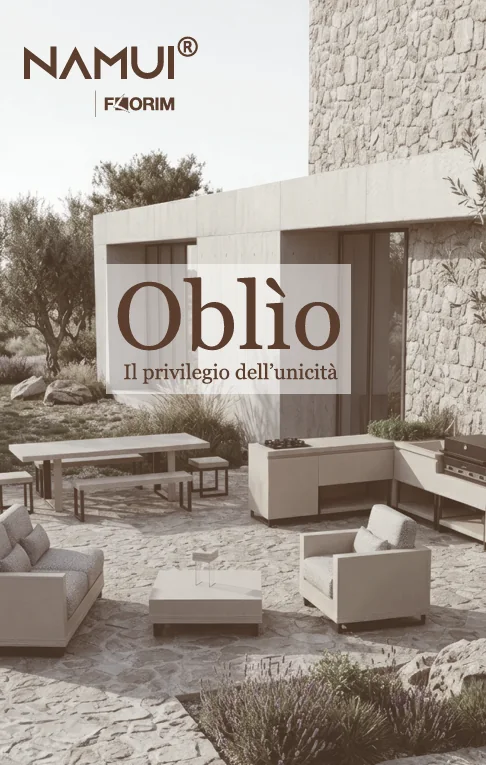

DIŞ MEKÂN / MODÜLER TASARIM · 01 / 04
Florim × Namui
Oblìo
Florim ve Namui’nin dış mekân için geliştirdiği, farklı ihtiyaçlara göre kurulabilen modüler bir yaşam sistemi.
Florim’in resmî sayfasını inceleyinSERİ / TASARIM YAKLAŞIMI
Dış mekânda yaşam alanı
Oblìo, dış mekânı yaşam alanının doğal bir uzantısı olarak ele alıyor. Seramik yüzeyleri; ada ve duvar tipi mutfak modülleri, barbekü ve yıkama üniteleri, saksılar, oturma elemanları, masa, bank ve aydınlatma ile bir araya geliyor. Plug & Play modüller farklı düzenlere göre birleştirilebiliyor.
Florim’in resmî tanıtımında taşıyıcı yapının denizcilik sektöründen esinlenen paslanmaz çelikten üretildiği ve dış koşullara göre tasarlandığı belirtiliyor. Gizli teknik bölmeler ve modüler kurgu, tasarımın temiz ve bütünlüklü görünümünü destekliyor.
Florim’in resmî sayfasıİçerik ve görseller Florim’in resmî ürün / marka sayfasından alınmıştır.
OBLÌO / TASARIM KATALOĞU
Oblìo kataloğuna
göz atın.
Florim ve Namui iş birliğiyle hazırlanan Oblìo kataloğunu inceleyin.
Kataloğu yeni sekmede aç
FLORIM / GÖRSEL SEÇKİSİ
Seriyi yakından keşfedin
Resmî Florim görselleri. Görseli seçerek büyütebilirsiniz.
BEKAMAR / FLORIM
Projeniz için
birlikte değerlendirelim.
Oblìo hakkında ürün ve proje bilgisi için Bekamar ekibine ulaşın.
Bekamar ile iletişime geç